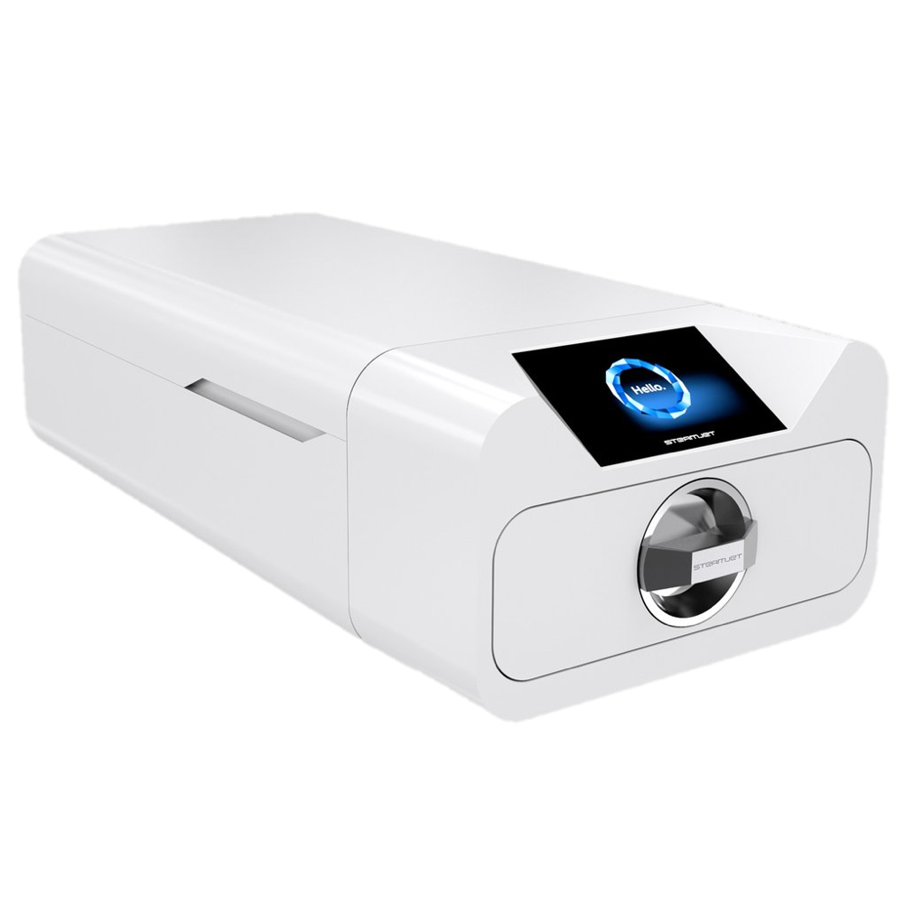

Pas på dig selv
Neglehygiejene spiller en væsentlig rolle for kroppens velvære. Derfor er det også særligt vigtigt under pandemien, som vi står i nu, at være ekstra opmærksom på håndhygiejne. Det er vigtigt at fokusere på rene hænder, så du er med til mindske spredningen af bakterier. Ved at spritte og vaske dine hænder, er du med til at mindske smitten. I neglesalonen finder du håndsprit lige når du kommer ind ad døren, som er med til at både du og jeg føler os ekstra sikre.
Føl dig sikker hos os
Hos Atelier Beauty gør vi en ekstra indsats for at holde hygiejne niveauet oppe. Den vigtigste faktor er at du føler, at du er i gode hænder, og føler dig tryg i neglesalonen. Derfor er den nyeste inverstering den helt ny ”Enbio”, der er den højeste standard indenfor autoklaver. Denne maskine er med til gøre redskaberne som benyttes til manicure og gelenegle helt desinficerede. Maskinen steriliserer bakterier gennem varme og tryk, og dermed med til at gøre dit besøg i salonen sikkert og bekymringsfrit.
Generelle retningslinjer for at holde dine negle rene
- Lad være med at dele personlige hygiejne produkter. Dette gælder også negleklippere, da de kan sprede mange bakterier
- Brug gummihandsker eller lignende under rengøring. Dette er med til at sørge for, at neglene ikke flosser, som de ellers gør under forlænget vandeksponering
- Undgå så vidt muligt produkter med acetone i, da de er stærkt opløsende og er hårde mod neglene
- Vaske dine hænder korrekt, for at sikre dig god håndhygiejne og rene hænder. Hvis du har fået lavet gele- eller akrylnegle, skal du være ekstra opmærksom på dette, da der kan dannes bakterier under neglene
- Ved at holde hænderne fugtige med håndcreme forebygger man, at neglebåndene vokser for meget. På den måde kan du sikre dig, at din neglebehandling forbliver pæn og holder længere
- Undgå at bide negle da dette fører bakterier og vira direkte til din mund. Dette kan være med til at skade tænder eller danne forkølelsessår